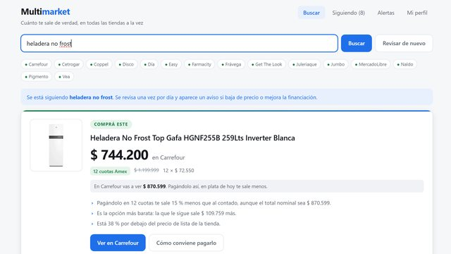

01 · .NET + IA
Multimarket
Cuánto sale de verdad una compra, en todas las tiendas a la vez.
- .NET 10
- C#
- SQLite
- React
- Vite
- Claude API
Problema
El precio de vidriera no sirve para decidir: el mismo producto sale distinto al contado que en cuotas, y lo que conviene depende de la inflación y de la tarjeta.
Qué construí
Una API en .NET 10 con SQLite y un front en React. Un único conector VTEX cubre 13 tiendas. Lleva cuotas y promociones a valor presente con la tasa del usuario, y vigila a diario los productos que sigue.
Decisiones
- La relevancia de los resultados la decide un LLM, con una sola llamada por búsqueda. Las reglas de texto tenían techo y cada categoría nueva pedía otra.
- El monitoreo diario no usa modelo: comparar precios es aritmética. Así operar sale gratis.
- Ninguna tienda entra sin comparar su precio contra la página real. Así aparecieron precios de lista inflados 80 veces, productos fantasma y fichas sin stock con precios viejos.
14,5 %más barato de verdad: mismo TV y mismo precio en 3 cadenas, pero solo una con 12 cuotas sin interés
13tiendas con un solo conector
108tests automatizados